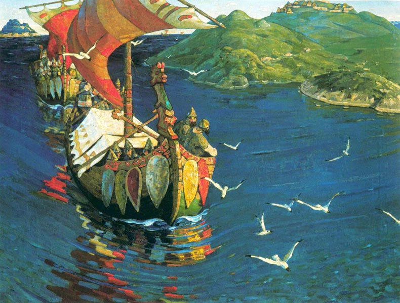
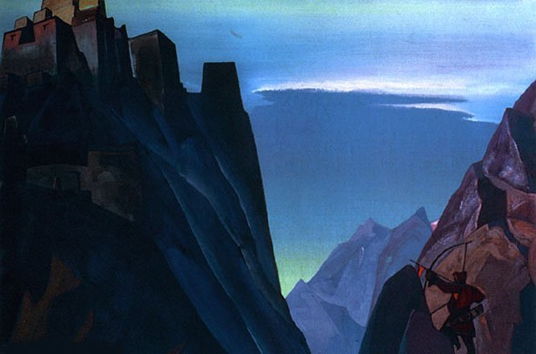

|
Николай Рерих | |
| Николай Рерих – русский художник, писатель, ученый, мистик. За свою жизнь написал более 7000 картин. Один из выдающихся деятелей культуры XX века, основатель движения «Мир через культуру». Родился 27 октября 1874 года в Санкт-Петербурге, скончался 13 декабря 1947 года в городе Кулу, штат Химачал-Прадеш, Индия. | |
| 1 - Заморские гости, 1901; 2 - Великий дух Гималаев, 1923; 3 - Весть Шамбалы, 1933. | |
|
  |
|
|
email: danredtu1103@mail.ru |